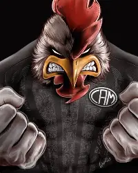

Oque está acontecendo?
O galo após a derrota para o Boca Juniors na Sulamericana, está muito pressionado e enfrentando críticas da torcida!

O galo após a derrota para o Boca Juniors na Sulamericana, está muito pressionado e enfrentando críticas da torcida!
Ainda não temos data para isso, pois o time fez a façanha de perder para o corinthians praticamente rebaixado, desse modo a tendência é de continuar com a crise até o time tomar vergonha na cara e resolver honrar a camisa que vestem!